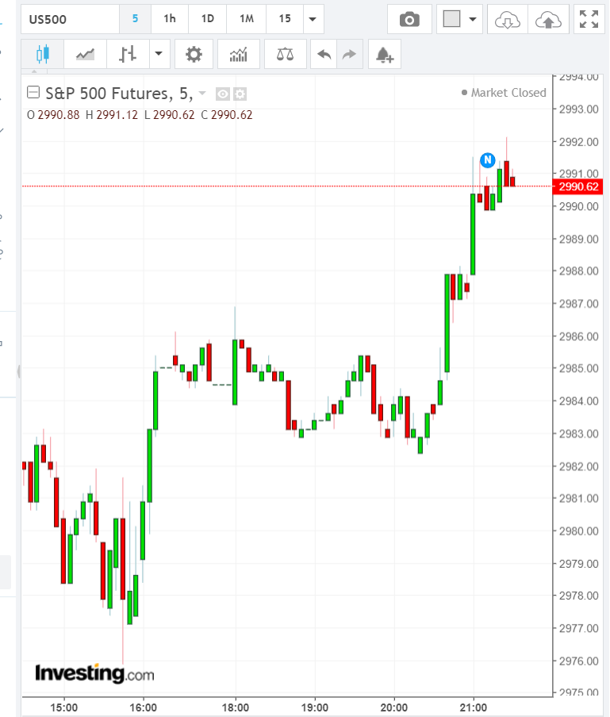
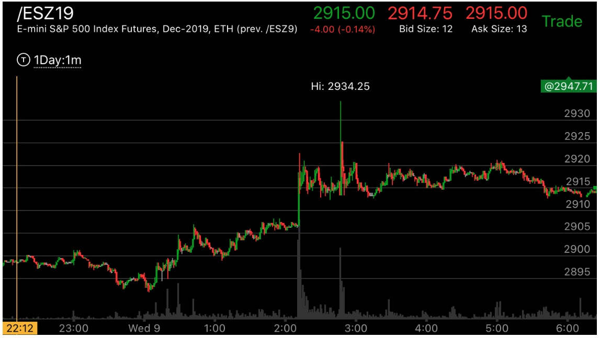
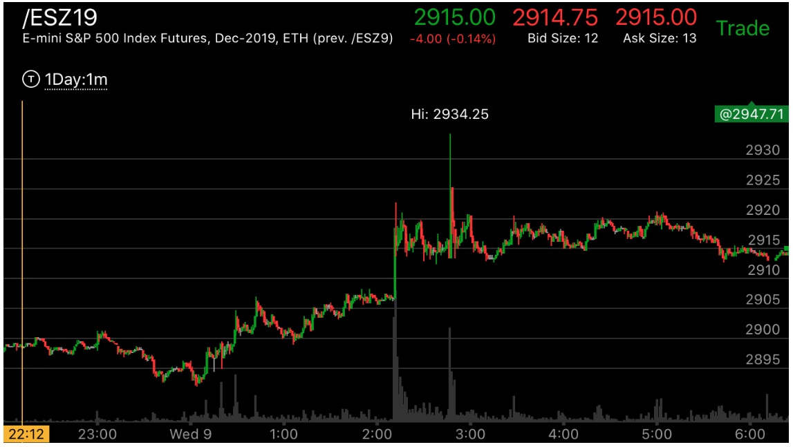

多日的走势盘前和盘后的配合
- 判断对了更大的走势后，它的盘前和盘后在有些情况下，会接力运动。这个时候，一定要盘后也操作。否则会错失机会。
可以在下午3点后开盘后操作。


图示：10：40大盘冲高后，快速下跌。可以看到，大盘是处于升势的。所以它一定会回调后，再次上涨。但是它一直回调到了收盘也没有涨。刚刚收盘，它就快速涨到了2985，超过了盘中的高点。


图示：周日下午，期货一开盘，就大涨。幅度是10个点。一直运动到了开盘。
开盘后，它处于升势。到了10：30，它大涨。幅度也是10个点。速度很快。这样就反转了盘前的走势。这样可以得出两个结论。
它会大跌。它至少会低于2928这个点。这个点是盘前走势开始的点。虽然不一定是很快跌完。但是也就是当天或者第二天的事情。
当天它就下跌，跌倒了低点。收盘后，它继续下跌。第二天低开低走。所以这个走势。应该持续不断的做空。收盘后也要继续做空。
 



图示：
0. 这个走势是在
一个更大的走势内部的。这个更大的走势是升势，低点是2858，高点是2990.所以它不会低于2858的。
1. 第一天，交易时段，从2924开始下跌，一开始就很快。这说明它是第一浪下跌。震荡后，它再次下跌。收盘到了最低点。从幅度上看，它完成了两段下跌的走势。
虽然它第二段下跌速度慢，但是幅度远远超过第一段。所以完成了两段下跌。
2. 到了晚上，它开始了缓慢的反弹。一路上涨。到了2：00它加速上涨，速度很快。这样其实是第二浪上涨。幅度到了2920.但是它
并没有有效的突破前面两段下跌走势的起点2924.所以说未来一定会突破的。
3. 第二天开盘后，它填补了盘前走势造成的真空在2908，然后冲高，它在前面的顶点位置2918附近震荡了很久，然后冲到了2924，立刻返回。
这个不算是到达。一定要超过，而且停止一段时间。果然，它出现了拉回后，10：20加速下跌，走平。然后开始了几段连续的上涨。
一定要创新高。创新高后，它再次冲高，立刻拉回。这样还不是顶部。再次冲高，走平。这样还不是顶部。虽然已经具备了反转的条件。
它再次冲高。然后突然大跌。这个大跌，可以解释为顶部很弱。未来会回来。其实不然。这个不是一个相对弱势的走势。而是因为它
已经具备了反转的条件，需要一个合适的形状，然后下跌。所以不能用相对弱势来分析。这个走势反转后，从前一天半夜的走势看，
一定要低于2988这个低点。
4. 收盘后，3点再次开盘，它走平了几分钟后，猛然大跌。低于了2888后，在2885附近走平。这个其实本身是个两段走势。这个两段
下跌走势，第一段很小，第二段很大。而它速度很快。
就是完成了走势了。它在底部走平，几乎没有反弹。说明这个就是底部。这样大盘的跌势完成了。
5. 跌势结束后，它的高点是2929，也就是前面走势的结束的地方。它必须超过这个点。它在晚上一直在低于2923的地方徘徊了一夜。
开盘后，一举突破了2929这个前面走势的高点。这样，就只看这个走势本身是否会反转了。这个走势，它走出了一个很大的第一浪。
这个第一浪是在震荡很久的基础上的。所以如果光看开盘后的走势，无法判断第一浪，会以为第一浪是从2916开始的一个小的浪。
其实第一浪是从2922开始，到2939结束的。这个才是脱离震荡的第一浪。而它回调后，再次创新高的时候，非常谨慎，它先是
冲高，然后低于前面高点后，走平很久。然后才越过高点。越过高点后的幅度很小，这样就不是反转走势。它也不是走平后继续上涨的
反转走势。它下来后，填补真空后，未来继续上涨。